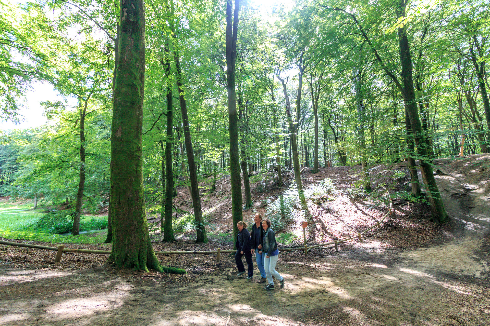
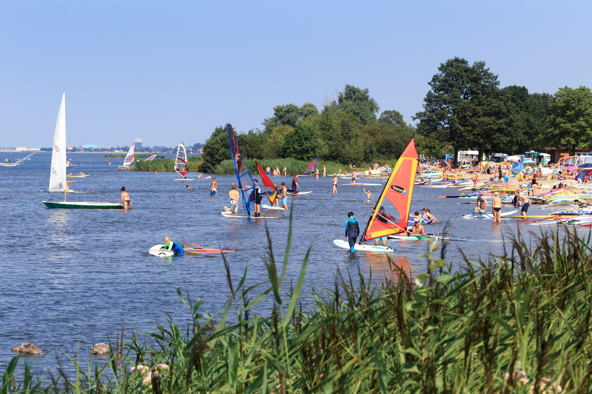

Het eeuwenoude Speulder- en Sprielderbos is één van de mooiste, grootste en oudste beukenbossen van Nederland. Kromme, in wonderlijke bochten gegroeide beuken op een glooiende ondergrond bepalen de bijna mysterieuze sfeer van dit bos. Naast deze ‘dansende bomen’ hebben op andere plekken de beuken lange rechte stammen en lijkt het onder het dichte bladerdak wel alsof je in een kathedraal bent. In de jongere delen van het bos mag de natuur haar gang gaan, en is een meer gevarieerd gemengd bos ontstaan. Hier zijn de beuken spontaan ontkiemt, waardoor een meerjarig bos met een dichte ondergroei is ontstaan. Deze afwisseling maakt het Speulder- en Sprielderbos in alle jaargetijden mooi. Of het nu de fris groene blaadjes in het voorjaar zijn, de door de beukenbladeren verstrooide zonnestralen in de zomer, de goudkleurige bladeren in de herfst of de kale stammen op een besneeuwde ondergrond in de winter.
Strand Horst is dé surfspot van Midden-Nederland. Deze unieke, ondiepe- en vlakwater locatie aan het Wolderwijd (Randmeren) is voor veel watersporters de ideale plek om te kitesurfen, windsurfen en suppen. Strand Horst bied je een breed scala aan activiteiten. Wat dacht je van fietsen, wandelen, windsurfen, kitesurfen of Expeditie Veluwe spellen? Ook heeft Strand Horst een beachclub waar je terecht kan voor lekkere versnaperingen en lekker loungen. Strand Horst ligt in Ermelo en Harderwijk en heeft verschillende zandstranden, ligweiden en voorzieningen voor een dagje uit. Vanuit Harderwijk is Strand Horst goed te bereiken met de fiets via een schitterende fietsroute langs het water. Ook vanuit Ermelo kunt u hier gemakkelijk naartoe fietsen Door de centrale ligging aan de A28 is de locatie uitstekend bereikbaar met de auto. Daarnaast heeft Strand Horst een jachthaven en kunt u per fiets of lopend met het pontje naar Zeewolde in Flevoland.